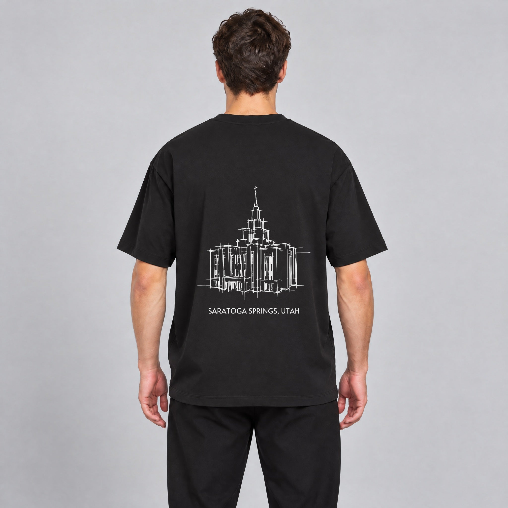
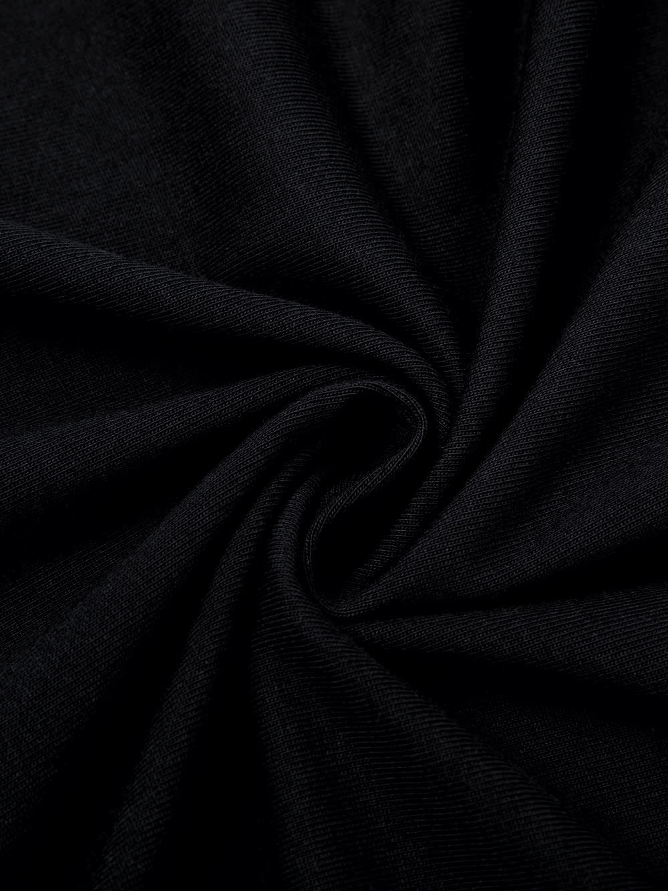
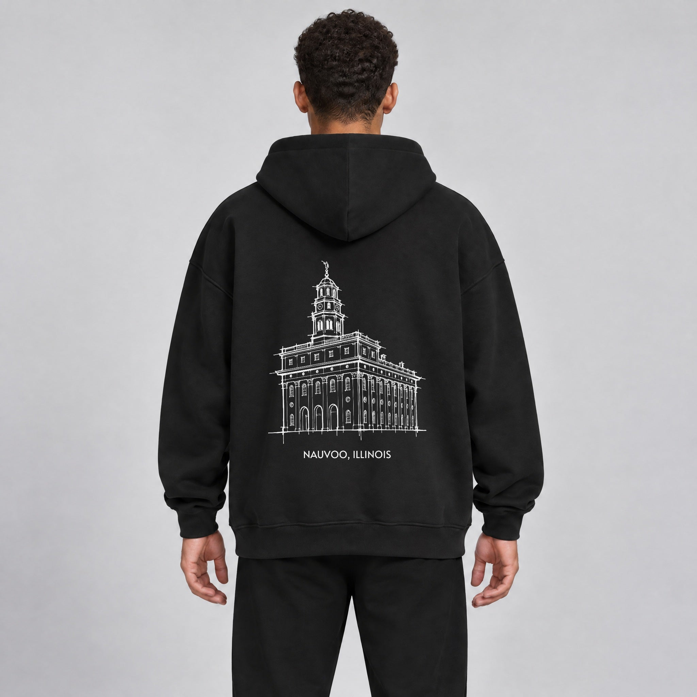
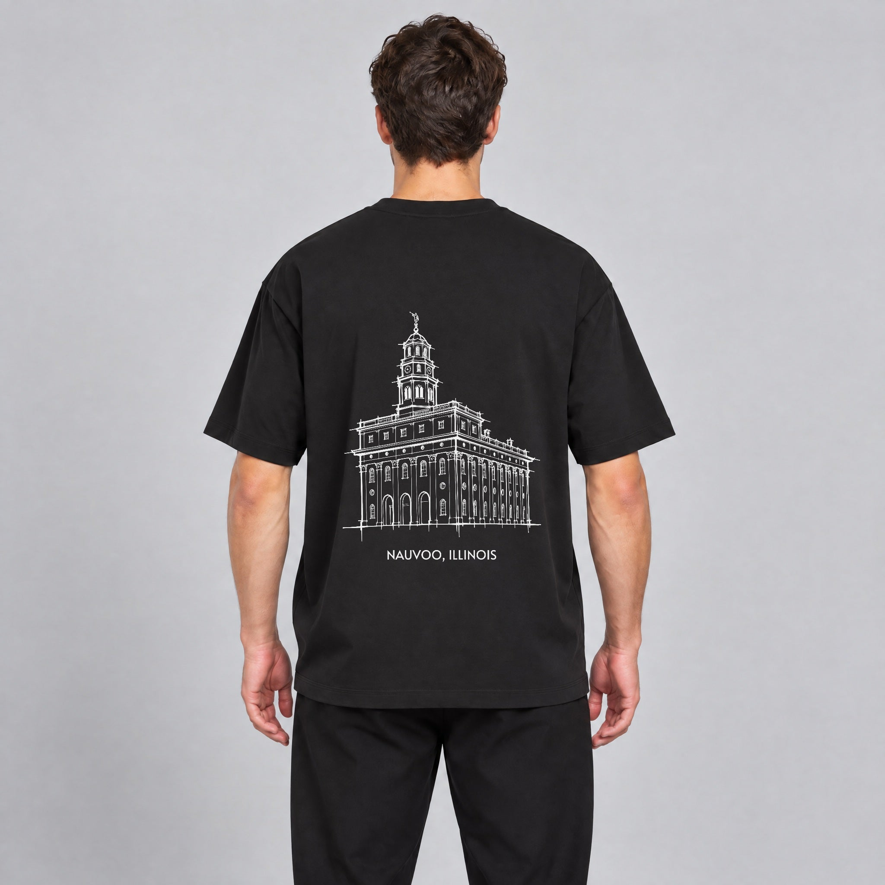

Six ways to show that the garment is premium, each one tied back to why the shirt exists. Every demo below runs live. The photos are stand-ins: real Tapstitch close-ups of your blanks and your live Saratoga Springs and Nauvoo product photos. The final images come from kie.ai or Higgsfield using the prompts at the bottom.
Those six chips are the only specs the drafts put on screen. Each one comes from BRAND.md or your garment configs. Fibre content is not on file, so no draft claims it.
The band pins in place while you scroll. The camera pushes from the full garment into the temple, into the fabric, and down to the city line. Words and spec tags arrive at each stop. This is your "dramatic zoom" in its purest form.


Scroll through the band, or use the dots to jump between the four stops.
Homepage, straight after the hero. Full width, about three screens of scroll on desktop and two on a phone.
The quality is real at every distance you look at it. The last stop lands on the city line, which ties the fabric back to a real place.
One pp-scroll-zoom section. A small script maps scroll position to scale and crossfade. It doesn't depend on newer browser scroll features, so it behaves the same in Safari and Chrome. Reduced motion shows the four stops as a static strip.
Medium The zoom only looks premium if the garment image is at least 2048px and sharp around the print. A soft source shows mush at 3x.
The temple draws itself on paper using your real stroke file. Then the paper dissolves into cotton and the lines turn to white ink. This links the craft of the drawing to the craft of the garment, and no competitor has this asset.
Homepage, or the product page in place of the current pp-temple-drawing band. On a product page it draws that product's own temple.
Care went into the drawing, and the same care goes onto the shirt. The handover from paper to cotton is the whole idea.
Extends pp-pen-draw.js, which already loads the stroke files and the art. A new "printed" end state swaps paper for fabric and recolours the strokes. Your stroke files and art need no changes.
Low to medium Most of the engine exists. Be careful with wording that could imply each shirt is hand drawn. The copy above only says the temple starts as a drawing.
Thin leader lines draw out from the garment, and spec tags snap in at the end of each. It's a technical, engineered look, kept quiet in white with a single orange dot.

Best as version 2 of your existing pp-garment-anatomy section, which already draws callout lines on scroll. Adding spec tags there beats building a second, similar section.
Real numbers, stated plainly. Premium buyers trust specifics more than adjectives.
Low Check Confirm that "Ships in 4 to 7 days" is still true before it goes on the homepage. It comes from BRAND.md, 14 Sep 2026.
Your positioning chain from BRAND.md section 5, told as kinetic type over slowly drifting fabric. Each line lights up in turn and the earlier lines stay dimly visible, so the chain reads as cause and effect. This is where quality becomes part of the purpose.
Homepage, just before the founder letter, so the letter answers "why". The founder letter itself stays untouched.
Comfort is the start of the brand's reason to exist. The last line echoes the "What's on your shirt?" heading already on the homepage.
Low Text only plus one image. The risk is tone. Keep it slow and quiet. Fast, punchy type would fight "reverent, understated".
Three close-ups side by side, each slowly pushing in once it scrolls into view and further on hover. One short label each. It's the quiet version of the zoom, and it works on a product page where a pinned scroll band would be too much.
The fleece tile here is Tapstitch's mauve close-up, darkened for the demo only. The real tile needs a black version (P3).
Product page, below the main product area and above related products. It also works on the homepage, under featured products.
Look at it this closely and it still holds up.
Low The easiest draft to ship first. Keep it out of the product details column, so Easify and Kiwi are never touched.
A magnifying lens the shopper drags across the print. On a phone it follows the finger. It's interactive, so people choose to look closer instead of being shown.

Use a mouse or a finger. With the keyboard, focus the image and use the arrow keys.
Product page, in its own section below the main product area. Never inside the product details block where Easify and Kiwi live.
Nothing is hidden at full zoom.
Medium It needs one high-resolution image per product (at least 2048px), ideally pulled from the product's own gallery. At 3x, a weak source shows its flaws, which is a good thing to know before shoppers see it.
Image models still garble fine line art, and a wrong drawing is worse than none. So the rule is: generate the fabric, light and garment, and never the temple. The temple print always goes on afterwards with your existing composite.py, which places the real art at true physical size and shades it into the folds. You also already have kie_client.py and build_colourways.py in the photo-mockup folder.
| Shot | Method | Used by |
|---|---|---|
| P1 Full garment, back | Generate a blank, unprinted garment with your mockup as reference, then composite the real temple | 1, 3, 6 |
| P2 Jersey macro, black | Recolour Tapstitch's real jersey close-up to black (keeps the true knit), or generate fresh | 1, 2, 4, 5 |
| P3 Fleece macro, black | Recolour Tapstitch's real fleece close-up from mauve to black | 5 |
| P4 Collar and hem, black | Recolour Tapstitch's navy collar and hem shots | 5 (extra tiles) |
| P5 Weight and drape | Generate with the hoodie mockup as reference | 4, homepage |
| P6 Colour stack | Generate, using your measured swatch hex values | Collection banner |
| P7 Paper texture | Generate (no product in it) | 2 |
| V1 Slow fabric pan | Image to video from P2 (Kling via Higgsfield) | 4 |
config/swatches.json: Black #191919, Charcoal #56575B, Coffee #58402E, Navy Blue #283243, Maroon #6D1E24.